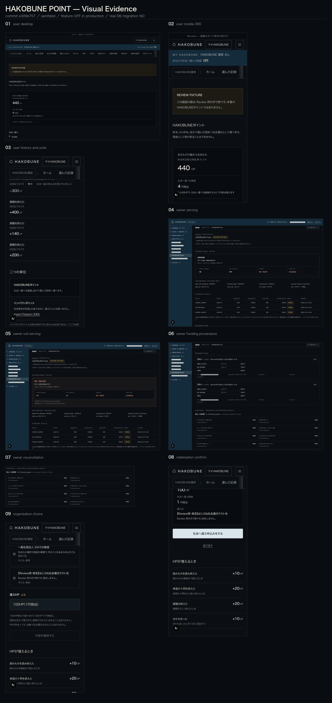

- lane
- point
- commit
- e309e757
- generated
- 2026-10-14T22:35:03+00:00
- desktop
- 5
- mobile
- 4
- production touched
- NO

- 01user desktop
desktop
- 02user mobile 390
mobile
- 03user history and units
mobile
- 04owner serving
desktop
- 05owner not serving
desktop
- 06owner funding provenance
desktop
- 07owner reconciliation
desktop
- 08redemption confirm
mobile
- 09organization choice
mobile